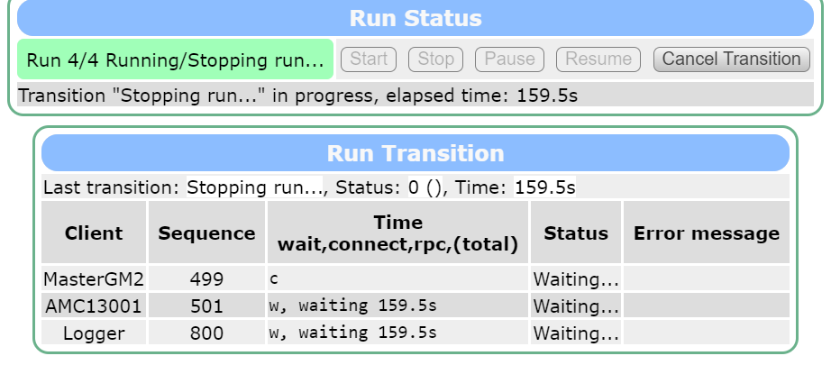
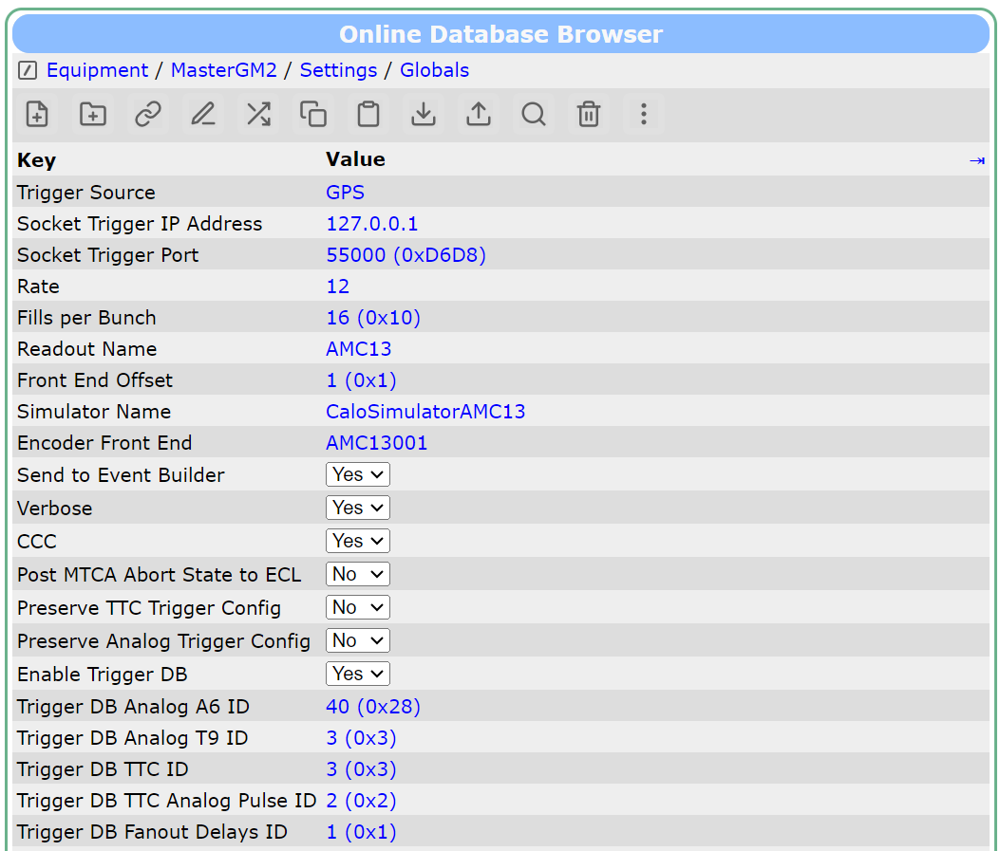
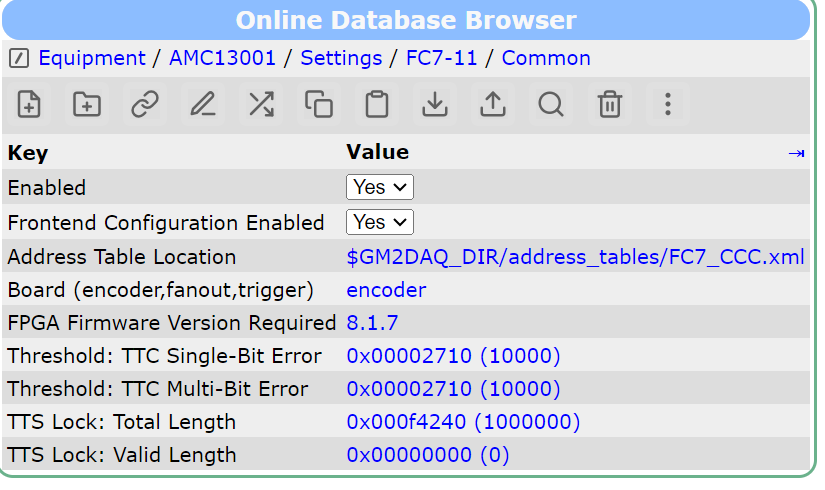
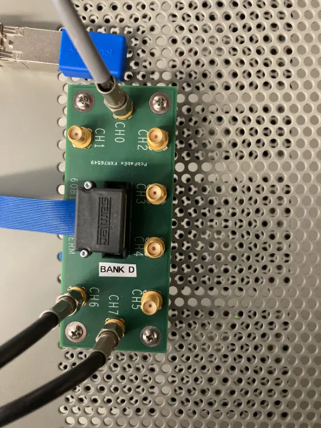
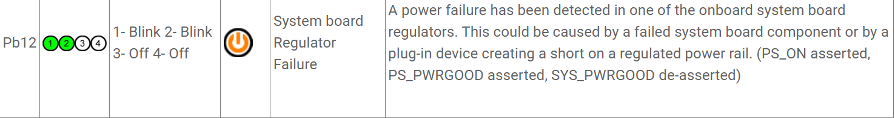
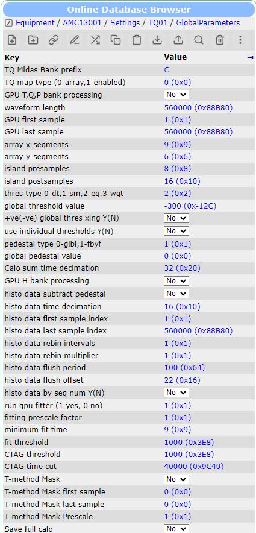
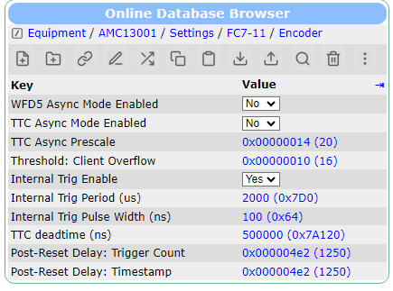
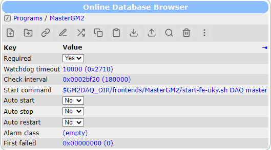
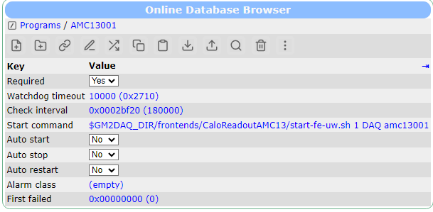

I was able to finally get everything to ping at once, without turning off and on ports:
[root@dhcp-10-163-105-238 amc13StandaloneMAN_2014-05-12]# ping 192.168.1.41 PING 192.168.1.41 (192.168.1.41) 56(84) bytes of data. 64 bytes from 192.168.1.41: icmp_seq=1 ttl=255 time=0.477 ms ^C --- 192.168.1.41 ping statistics --- 1 packets transmitted, 1 received, 0% packet loss, time 0ms rtt min/avg/max/mdev = 0.477/0.477/0.477/0.000 ms [root@dhcp-10-163-105-238 amc13StandaloneMAN_2014-05-12]# ping 192.168.1.150 PING 192.168.1.150 (192.168.1.150) 56(84) bytes of data. 64 bytes from 192.168.1.150: icmp_seq=1 ttl=64 time=0.098 ms 64 bytes from 192.168.1.150: icmp_seq=2 ttl=64 time=0.062 ms ^C --- 192.168.1.150 ping statistics --- 2 packets transmitted, 2 received, 0% packet loss, time 999ms rtt min/avg/max/mdev = 0.062/0.080/0.098/0.018 ms [root@dhcp-10-163-105-238 amc13StandaloneMAN_2014-05-12]#
[root@dhcp-10-163-105-238 amc13StandaloneMAN_2014-05-12]# ping 192.168.1.41
PING 192.168.1.41 (192.168.1.41) 56(84) bytes of data.
64 bytes from 192.168.1.41: icmp_seq=1 ttl=255 time=0.477 ms
^C
--- 192.168.1.41 ping statistics ---
1 packets transmitted, 1 received, 0% packet loss, time 0ms
rtt min/avg/max/mdev = 0.477/0.477/0.477/0.000 ms
[root@dhcp-10-163-105-238 amc13StandaloneMAN_2014-05-12]# ping 192.168.1.150
PING 192.168.1.150 (192.168.1.150) 56(84) bytes of data.
64 bytes from 192.168.1.150: icmp_seq=1 ttl=64 time=0.098 ms
64 bytes from 192.168.1.150: icmp_seq=2 ttl=64 time=0.062 ms
^C
--- 192.168.1.150 ping statistics ---
2 packets transmitted, 2 received, 0% packet loss, time 999ms
rtt min/avg/max/mdev = 0.062/0.080/0.098/0.018 ms
[root@dhcp-10-163-105-238 amc13StandaloneMAN_2014-05-12]#The top pinging being the 10GbE link, the bottom pinging being the MCH through 1GbE. I followed this strategy:
So one thing I may try is shrinking the enp5s0 subnet to 192.168.1.1 to 192.168.1.128, then changing enp1s0f1's subnet to 192.168.1.129 - 192.168.1.255. Then I think I can put the 10GbE NIC of the AMC13 on enp1s0f1's subnet and literally everything else on enp5s0's subnet.
Here's what I did:
/etc/sysconfig/network-script/ifcfg-enp1s0f0 (10GbE)
# # Connect to AMC # HWADDR=b4:b5:2f:a4:e7:fc TYPE=Ethernet PROXY_METHOD=none BROWSER_ONLY=no BOOTPROTO=none IPADDR=192.168.1.21 NETMASK=255.255.255.0 DEFROUTE=yes IPV4_FAILURE_FATAL=no IPV6INIT=yes IPV6_AUTOCONF=yes IPV6_DEFROUTE=yes IPV6_FAILURE_FATAL=no IPV6_ADDR_GEN_MODE=stable-privacy UUID=f1d52da3-687b-3215-a2c0-60c11d0fd3bf ONBOOT=yes AUTOCONNECT_PRIORITY=-999 MTU=9000 DEVICE=enp1s0f1 NAME=enp1s0f1
#
# Connect to AMC
#
HWADDR=b4:b5:2f:a4:e7:fc
TYPE=Ethernet
PROXY_METHOD=none
BROWSER_ONLY=no
BOOTPROTO=none
IPADDR=192.168.1.21
NETMASK=255.255.255.0
DEFROUTE=yes
IPV4_FAILURE_FATAL=no
IPV6INIT=yes
IPV6_AUTOCONF=yes
IPV6_DEFROUTE=yes
IPV6_FAILURE_FATAL=no
IPV6_ADDR_GEN_MODE=stable-privacy
UUID=f1d52da3-687b-3215-a2c0-60c11d0fd3bf
ONBOOT=yes
AUTOCONNECT_PRIORITY=-999
MTU=9000
DEVICE=enp1s0f1
NAME=enp1s0f1Notice I didn't bother changing the netmask here, it still can see everything on 192.168.1.xxx; as long as it has a priority less than enp5s0, this isn't a problem (and once I got it working, I didn't want to touch it.)
/etc/sysconfig/network-script/ifcfg-enp5s0 (1GbE)
# # Connect to MCH # TYPE=Ethernet BOOTPROTO=static IPADDR=192.168.1.1 NETMASK=255.255.255.128 IPV4_FAILURE_FATAL=no IPV6INIT=no IPV6_AUTOCONF=yes IPV6_DEFROUTE=yes IPV6_PEERDNS=yes IPV6_PEERROUTES=yes IPV6_FAILURE_FATAL=no NAME=enp5s0 DEVICE=enp5s0 ONBOOT=yes
#
# Connect to MCH
#
TYPE=Ethernet
BOOTPROTO=static
IPADDR=192.168.1.1
NETMASK=255.255.255.128
IPV4_FAILURE_FATAL=no
IPV6INIT=no
IPV6_AUTOCONF=yes
IPV6_DEFROUTE=yes
IPV6_PEERDNS=yes
IPV6_PEERROUTES=yes
IPV6_FAILURE_FATAL=no
NAME=enp5s0
DEVICE=enp5s0
ONBOOT=yesNotice here NETMASK=255.255.255.128. This means that enp5s0 only sees 192.168.1.1 to 192.168.1.127; I'm not sure on the details of exactly how this is works.
Reload the network with:
ifdown enp5s0 ifdown enp1s0f1 ifup enp5s0 if up enp1s0f1
ifdown enp5s0
ifdown enp1s0f1
ifup enp5s0
if up enp1s0f1We had T1 and T2 on 192.168.1.188 and 192.168.1.189 respectively. This is an issue if I want to do the above set-up because it's outside the 1GbE's subnet. So we have to change them.
cd /home/installation_testing/packages/experiment/lxedaq/environment_setup source ./setup_environment cd /home/installation_testing/packages/experiment/lxedaq/amc13/amc13_v1_2_18/dev_tools/amc13Config ./applyConfig -i 192.168.1.13
cd /home/installation_testing/packages/experiment/lxedaq/environment_setup
source ./setup_environment
cd /home/installation_testing/packages/experiment/lxedaq/amc13/amc13_v1_2_18/dev_tools/amc13Config
./applyConfig -i 192.168.1.13The -i flag in applyConfig tells the script to set T1's IP to 192.168.1.13 and T2's IP to one higher being 192.168.1.14.
Now we can test that we can ping T1 and T2:
[root@dhcp-10-163-105-238 amc13Config]# ping 192.168.1.13 PING 192.168.1.13 (192.168.1.13) 56(84) bytes of data. 64 bytes from 192.168.1.13: icmp_seq=1 ttl=64 time=0.111 ms 64 bytes from 192.168.1.13: icmp_seq=2 ttl=64 time=0.133 ms ^C --- 192.168.1.13 ping statistics --- 2 packets transmitted, 2 received, 0% packet loss, time 1000ms rtt min/avg/max/mdev = 0.111/0.122/0.133/0.011 ms [root@dhcp-10-163-105-238 amc13Config]# ping 192.168.1.14 PING 192.168.1.14 (192.168.1.14) 56(84) bytes of data. 64 bytes from 192.168.1.14: icmp_seq=1 ttl=64 time=0.174 ms 64 bytes from 192.168.1.14: icmp_seq=2 ttl=64 time=0.133 ms ^C --- 192.168.1.14 ping statistics --- 2 packets transmitted, 2 received, 0% packet loss, time 999ms rtt min/avg/max/mdev = 0.133/0.153/0.174/0.023 ms [root@dhcp-10-163-105-238 amc13Config]#
[root@dhcp-10-163-105-238 amc13Config]# ping 192.168.1.13
PING 192.168.1.13 (192.168.1.13) 56(84) bytes of data.
64 bytes from 192.168.1.13: icmp_seq=1 ttl=64 time=0.111 ms
64 bytes from 192.168.1.13: icmp_seq=2 ttl=64 time=0.133 ms
^C
--- 192.168.1.13 ping statistics ---
2 packets transmitted, 2 received, 0% packet loss, time 1000ms
rtt min/avg/max/mdev = 0.111/0.122/0.133/0.011 ms
[root@dhcp-10-163-105-238 amc13Config]# ping 192.168.1.14
PING 192.168.1.14 (192.168.1.14) 56(84) bytes of data.
64 bytes from 192.168.1.14: icmp_seq=1 ttl=64 time=0.174 ms
64 bytes from 192.168.1.14: icmp_seq=2 ttl=64 time=0.133 ms
^C
--- 192.168.1.14 ping statistics ---
2 packets transmitted, 2 received, 0% packet loss, time 999ms
rtt min/avg/max/mdev = 0.133/0.153/0.174/0.023 ms
[root@dhcp-10-163-105-238 amc13Config]#The 10GbE NIC on the AMC13 has IP 192.168.1.32 by default. This is no good because it's inside the subnet of enp5s0, which we're trying to avoid. So let's set it to something outside the subnet (I chose 192.168.1.150):
export LD_LIBRARY_PATH=/home/installation_testing/packages/experiment/lxedaq/amc13/amc13StandaloneMAN_2014-05-12/lib:$LD_LIBRARY_PATH cd export LD_LIBRARY_PATH=/home/installation_testing/packages/experiment/lxedaq/amc13/amc13StandaloneMAN_2014-05-12/lib:$LD_LIBRARY_PATH bin/AMC13Tool -i 192.168.1.13
export LD_LIBRARY_PATH=/home/installation_testing/packages/experiment/lxedaq/amc13/amc13StandaloneMAN_2014-05-12/lib:$LD_LIBRARY_PATH
cd export LD_LIBRARY_PATH=/home/installation_testing/packages/experiment/lxedaq/amc13/amc13StandaloneMAN_2014-05-12/lib:$LD_LIBRARY_PATH
bin/AMC13Tool -i 192.168.1.13This will bring up AMC13Tool, we have to give it a similar -i flag like we did when setting the IPs.
I write the register that determines the 10GbE NIC's IP:
Pick an action (h for menu): wv 0x1c1c 0xc0a80196 Writing to T1: 00001c1c: c0a80196
Pick an action (h for menu): wv 0x1c1c 0xc0a80196
Writing to T1:
00001c1c: c0a80196This corresponds to 192.168.1.150 because in hex:
c0 -> 192 a8 -> 168 01 -> 1 96 -> 150
c0 -> 192
a8 -> 168
01 -> 1
96 -> 150Then I run ky_init.amc:
Pick an action (h for menu): do amc13_scripts/ky_init.amc
Pick an action (h for menu): do amc13_scripts/ky_init.amcReally, I think I could equivalently do this:
# enables amc slots and SFP outputs wv 0x3 0x1fff
# enables amc slots and SFP outputs
wv 0x3 0x1fffIn any event, the result is the 10GbE port is turned on.
We can test pinging both the AMC13 10GbE connection and the MCH:
[root@dhcp-10-163-105-238 amc13StandaloneMAN_2014-05-12]# ping 192.168.1.41 PING 192.168.1.41 (192.168.1.41) 56(84) bytes of data. 64 bytes from 192.168.1.41: icmp_seq=1 ttl=255 time=0.477 ms ^C --- 192.168.1.41 ping statistics --- 1 packets transmitted, 1 received, 0% packet loss, time 0ms rtt min/avg/max/mdev = 0.477/0.477/0.477/0.000 ms [root@dhcp-10-163-105-238 amc13StandaloneMAN_2014-05-12]# ping 192.168.1.150 PING 192.168.1.150 (192.168.1.150) 56(84) bytes of data. 64 bytes from 192.168.1.150: icmp_seq=1 ttl=64 time=0.098 ms 64 bytes from 192.168.1.150: icmp_seq=2 ttl=64 time=0.062 ms ^C --- 192.168.1.150 ping statistics --- 2 packets transmitted, 2 received, 0% packet loss, time 999ms rtt min/avg/max/mdev = 0.062/0.080/0.098/0.018 ms [root@dhcp-10-163-105-238 amc13StandaloneMAN_2014-05-12]#
[root@dhcp-10-163-105-238 amc13StandaloneMAN_2014-05-12]# ping 192.168.1.41
PING 192.168.1.41 (192.168.1.41) 56(84) bytes of data.
64 bytes from 192.168.1.41: icmp_seq=1 ttl=255 time=0.477 ms
^C
--- 192.168.1.41 ping statistics ---
1 packets transmitted, 1 received, 0% packet loss, time 0ms
rtt min/avg/max/mdev = 0.477/0.477/0.477/0.000 ms
[root@dhcp-10-163-105-238 amc13StandaloneMAN_2014-05-12]# ping 192.168.1.150
PING 192.168.1.150 (192.168.1.150) 56(84) bytes of data.
64 bytes from 192.168.1.150: icmp_seq=1 ttl=64 time=0.098 ms
64 bytes from 192.168.1.150: icmp_seq=2 ttl=64 time=0.062 ms
^C
--- 192.168.1.150 ping statistics ---
2 packets transmitted, 2 received, 0% packet loss, time 999ms
rtt min/avg/max/mdev = 0.062/0.080/0.098/0.018 ms
[root@dhcp-10-163-105-238 amc13StandaloneMAN_2014-05-12]#Becuase the IP of T1 and T2 is hardcoded in the frontend (for some reason), we have to change this AMC13.cpp:84
from
ss_ip_hardcoded << "192.168." << byte3 << "." << (188 + sel);
ss_ip_hardcoded << "192.168." << byte3 << "." << (188 + sel);to
ss_ip_hardcoded << "192.168." << byte3 << "." << (13 + sel);
ss_ip_hardcoded << "192.168." << byte3 << "." << (13 + sel);I was having some weird errors the first time I tried this. By just changing the IP from 192.168.1.21 --> 192.168.1.100 for enp1s0f1 in the network settings I lost the ability to ping the AMC13 10GbE port at 192.168.1.32. I could change the IP back to 192.168.1.21 and regain the ability to ping. Changing the IP from 192.168.1.32 --> 192.168.1.150 I completely lost the ability to ping, even when I tried to change back from 192.168.1.150 --> 192.168.1.32.
I power cycled the crate and restarted the 'be' computer. Then I had no such troubles anymore.
I think I must have set some weird network settings while I was playing with routing tables before. I have no idea why I had this behavior.
I'm able to sucessfully start both frontends. However, when trying to start a run no data is produced. Furthermore, the CaloReadoutAMC13 frontend ignores the end of run signal and hangs. It just contiously tries to read data
Started run 4 ReadXBytes(919): socket file descriptor 24, request 8 bytes, read 0 bytes, tries 1000 tcp_thread(622): start read of new event, fill 0, buffer 0 ... ReadXBytes(919): socket file descriptor 24, request 8 bytes, read 0 bytes, tries 1000 tcp_thread(622): start read of new event, fill 0, buffer 0 ReadXBytes(875): ReadXBytes :: x = 8
Started run 4
ReadXBytes(919): socket file descriptor 24, request 8 bytes, read 0 bytes, tries 1000
tcp_thread(622): start read of new event, fill 0, buffer 0
...
ReadXBytes(919): socket file descriptor 24, request 8 bytes, read 0 bytes, tries 1000
tcp_thread(622): start read of new event, fill 0, buffer 0
ReadXBytes(875): ReadXBytes :: x = 8Maybe this issue lies in the Master frontend not "ending" first?
Frontend Initialization Complete
OK
BOR Received: Run 4
print(155): /Equipment/MasterGM2/Settings/Globals Trigger source GPS
print(156): /Equipment/MasterGM2/Settings/Globals Socket trigger IP address 127.0.0.1
print(157): /Equipment/MasterGM2/Settings/Globals Socket trigger port 55000
print(158): /Equipment/MasterGM2/Settings/Globals Rate 12.000000
print(159): /Equipment/MasterGM2/Settings/Globals Fills per bunch 8
print(160): /Equipment/MasterGM2/Settings/Globals Readout name AMC13
print(161): /Equipment/MasterGM2/Settings/Globals Front End Offset 1
print(162): /Equipment/MasterGM2/Settings/Globals Simulator name CaloSimulatorAMC13
print(163): /Equipment/MasterGM2/Settings/Globals Encoder Front End AMC13001
print(164): /Equipment/MasterGM2/Settings/Globals Send to event builder 1
print(165): /Equipment/MasterGM2/Settings/Globals Verbose 0
print(166): /Equipment/MasterGM2/Settings/Globals CCC 1
print(167): /Equipment/MasterGM2/Settings/Globals Post MTCA Abort State to ECL 1
print(168): /Equipment/MasterGM2/Settings/Globals Preserve TTC Trigger Config 0
print(169): /Equipment/MasterGM2/Settings/Globals Preserve Analog Trigger Config 0
print(170): /Equipment/MasterGM2/Settings/Globals Enable Trigger DB 1
print(171): /Equipment/MasterGM2/Settings/Globals Trigger DB Analog A6 ID 1
print(172): /Equipment/MasterGM2/Settings/Globals Trigger DB Analog T9 ID 1
print(173): /Equipment/MasterGM2/Settings/Globals Trigger DB TTC ID 1
print(174): /Equipment/MasterGM2/Settings/Globals Trigger DB TTC Analog Pulse ID 1
print(175): /Equipment/MasterGM2/Settings/Globals Trigger DB Fanout Delays ID 1
print(176): /Equipment/MasterGM2/Settings/Globals Database Connection pgsql://g2db-priv:5433/gm2_online_prod gm2_writer gm2_4_writer
print(177): /Equipment/MasterGM2/Settings/Globals Internal Trig Alarm Thresh (s) 30
print(178): /Equipment/MasterGM2/Settings/Globals T9A6Gap (ns) 8654175
trigger source 3 GPS 3
Buffers Used: 0, Buffers Capacity: 584
Waiting 3 s before starting CCC run ...
CCC: Starting the run ...
Started run 4
EOR received: End of run 4
CCC: Stopping the run ...
TTS status at end of run
CCC: RDY (BUSY - 0.0 msec ago)Frontend Initialization Complete
OK
BOR Received: Run 4
print(155): /Equipment/MasterGM2/Settings/Globals Trigger source GPS
print(156): /Equipment/MasterGM2/Settings/Globals Socket trigger IP address 127.0.0.1
print(157): /Equipment/MasterGM2/Settings/Globals Socket trigger port 55000
print(158): /Equipment/MasterGM2/Settings/Globals Rate 12.000000
print(159): /Equipment/MasterGM2/Settings/Globals Fills per bunch 8
print(160): /Equipment/MasterGM2/Settings/Globals Readout name AMC13
print(161): /Equipment/MasterGM2/Settings/Globals Front End Offset 1
print(162): /Equipment/MasterGM2/Settings/Globals Simulator name CaloSimulatorAMC13
print(163): /Equipment/MasterGM2/Settings/Globals Encoder Front End AMC13001
print(164): /Equipment/MasterGM2/Settings/Globals Send to event builder 1
print(165): /Equipment/MasterGM2/Settings/Globals Verbose 0
print(166): /Equipment/MasterGM2/Settings/Globals CCC 1
print(167): /Equipment/MasterGM2/Settings/Globals Post MTCA Abort State to ECL 1
print(168): /Equipment/MasterGM2/Settings/Globals Preserve TTC Trigger Config 0
print(169): /Equipment/MasterGM2/Settings/Globals Preserve Analog Trigger Config 0
print(170): /Equipment/MasterGM2/Settings/Globals Enable Trigger DB 1
print(171): /Equipment/MasterGM2/Settings/Globals Trigger DB Analog A6 ID 1
print(172): /Equipment/MasterGM2/Settings/Globals Trigger DB Analog T9 ID 1
print(173): /Equipment/MasterGM2/Settings/Globals Trigger DB TTC ID 1
print(174): /Equipment/MasterGM2/Settings/Globals Trigger DB TTC Analog Pulse ID 1
print(175): /Equipment/MasterGM2/Settings/Globals Trigger DB Fanout Delays ID 1
print(176): /Equipment/MasterGM2/Settings/Globals Database Connection pgsql://g2db-priv:5433/gm2_online_prod gm2_writer gm2_4_writer
print(177): /Equipment/MasterGM2/Settings/Globals Internal Trig Alarm Thresh (s) 30
print(178): /Equipment/MasterGM2/Settings/Globals T9A6Gap (ns) 8654175
trigger source 3 GPS 3
Buffers Used: 0, Buffers Capacity: 584
Waiting 3 s before starting CCC run ...
CCC: Starting the run ...
Started run 4
EOR received: End of run 4
CCC: Stopping the run ...
TTS status at end of run
CCC: RDY (BUSY - 0.0 msec ago)Master is the first in the sequence after all:

I changed the ODB settings to even more closely match the UW setup:

and

However, nothing changed.
I changed the method:
MasterGM2/AMC1300.cpp:921
int FC7_check_run_state() {
// get run state
int run_in_progress = fc7lib->getRunState(5, 1, fc7[ (crate_info[0].ccc_amc_slot - 1) ], 0);
if (run_in_progress == -1) {
return -1;
}
// wait until the run has stopped
int MAX_TRIES = 10;
int tries = 0;
while (run_in_progress == 1) {
sleep(1); // pause
// check run state
run_in_progress = fc7lib->getRunState(5, 1, fc7[ (crate_info[0].ccc_amc_slot - 1) ], 0);
if (run_in_progress == -1) {
return -1;
}
tries++;
if (tries > MAX_TRIES) {
return -2;
}
}
return 0;
} // FC7_check_run_stateint FC7_check_run_state() {
// get run state
int run_in_progress = fc7lib->getRunState(5, 1, fc7[ (crate_info[0].ccc_amc_slot - 1) ], 0);
if (run_in_progress == -1) {
return -1;
}
// wait until the run has stopped
int MAX_TRIES = 10;
int tries = 0;
while (run_in_progress == 1) {
sleep(1); // pause
// check run state
run_in_progress = fc7lib->getRunState(5, 1, fc7[ (crate_info[0].ccc_amc_slot - 1) ], 0);
if (run_in_progress == -1) {
return -1;
}
tries++;
if (tries > MAX_TRIES) {
return -2;
}
}
return 0;
} // FC7_check_run_stateand
MasterGM2/frontend.cpp:1187
switch (FC7_check_run_state()) {
case -1:
// Ethernet communication failure
cm_msg(MERROR, __FUNCTION__, "FC7-%02i: Unable to Verify Run has Stopped (Communication Failure)", crate_info[0].ccc_amc_slot);
break;
case -2:
// Run state stuck in progress
cm_msg(MERROR, __FUNCTION__, "FC7-%02i: Unable to Verify Run has Stopped (Run state still in progress)", crate_info[0].ccc_amc_slot);
break;
default:
// Otherwise do nothing
break;
}switch (FC7_check_run_state()) {
case -1:
// Ethernet communication failure
cm_msg(MERROR, __FUNCTION__, "FC7-%02i: Unable to Verify Run has Stopped (Communication Failure)", crate_info[0].ccc_amc_slot);
break;
case -2:
// Run state stuck in progress
cm_msg(MERROR, __FUNCTION__, "FC7-%02i: Unable to Verify Run has Stopped (Run state still in progress)", crate_info[0].ccc_amc_slot);
break;
default:
// Otherwise do nothing
break;
}Before, there was no number of "max tries" which caught the the frontend in a loop when trying to end a run if run_in_progress is stuck at value 1. Why run_in_progress is not changing is beyong me, somehow the FC7 is not recieving and end of run signal(?)
Any time I put the 1kHz trigger signal in D6 of the "D Bank" like so:

I get the following errors when trying to start CaloReadoutAMC13:
frontend_init(1923): AMC13 Not Ready 1/3: loc_tts = 4, should be 8 enc_tts = 8, should be 0 frontend_init(1900): AMC13 General Reset frontend_init(1908): AMC13 Counter Reset frontend_init(1915): AMC13 Final Status Check frontend_init(1923): AMC13 Not Ready 2/3: loc_tts = 4, should be 8 enc_tts = 8, should be 0 frontend_init(1900): AMC13 General Reset frontend_init(1908): AMC13 Counter Reset frontend_init(1915): AMC13 Final Status Check frontend_init(1923): AMC13 Not Ready 3/3: loc_tts = 4, should be 8 enc_tts = 8, should be 0
frontend_init(1923): AMC13 Not Ready 1/3:
loc_tts = 4, should be 8
enc_tts = 8, should be 0
frontend_init(1900): AMC13 General Reset
frontend_init(1908): AMC13 Counter Reset
frontend_init(1915): AMC13 Final Status Check
frontend_init(1923): AMC13 Not Ready 2/3:
loc_tts = 4, should be 8
enc_tts = 8, should be 0
frontend_init(1900): AMC13 General Reset
frontend_init(1908): AMC13 Counter Reset
frontend_init(1915): AMC13 Final Status Check
frontend_init(1923): AMC13 Not Ready 3/3:
loc_tts = 4, should be 8
enc_tts = 8, should be 0Simply taking the trigger out of the "D Bank" seems to solve the problem, regardless if internal trigger mode is enabled or not.
The meinberg card started complaining, supposedly after Tim tried to feed the trigger signal directly to it:
[root@dhcp-10-163-105-238 ~]# mbgstatus mbgstatus v4.2.24 copyright Meinberg 2001-2023 TCR180PEX 039212025430 (FW 1.21, ASIC 9.00) at port 0xE000, irq 45 ** mbg_get_time failed: Input/output error (rc: -73) ** mbg_get_hr_time failed: Input/output error (rc: -73) ** mbg_get_irig_rx_info failed: Input/output error (rc: -73) ** mbg_get_ref_offs failed: Input/output error (rc: -73) ** mbg_get_sync_time failed: Input/output error (rc: -73) Signal: 0% (IRIG) Status info: *** NO INPUT SIGNAL Status info: *** Not synchronized after last RESET Status info: Clock is synchronized [root@dhcp-10-163-105-238 ~]#
[root@dhcp-10-163-105-238 ~]# mbgstatus
mbgstatus v4.2.24 copyright Meinberg 2001-2023
TCR180PEX 039212025430 (FW 1.21, ASIC 9.00) at port 0xE000, irq 45
** mbg_get_time failed: Input/output error (rc: -73)
** mbg_get_hr_time failed: Input/output error (rc: -73)
** mbg_get_irig_rx_info failed: Input/output error (rc: -73)
** mbg_get_ref_offs failed: Input/output error (rc: -73)
** mbg_get_sync_time failed: Input/output error (rc: -73)
Signal: 0% (IRIG)
Status info: *** NO INPUT SIGNAL
Status info: *** Not synchronized after last RESET
Status info: Clock is synchronized
[root@dhcp-10-163-105-238 ~]#I tried:
echo 1 > /sys/bus/pci/devices/0000:02:00.0/reset
echo 1 > /sys/bus/pci/devices/0000:02:00.0/resetBut no luck.
After rebooting I remove these errors, getting the same staus as when I first loaded the drivers onto the card:
[root@dhcp-10-163-105-238 ~]# mbgstatus mbgstatus v4.2.24 copyright Meinberg 2001-2023 TCR180PEX 039212025430 (FW 1.21, ASIC 9.00) at port 0xE000, irq 45 Date/time: Th, 2024-04-04 20:27:24.09 UTC Signal: 0% (IRIG B122/B123, ** UTC offs not configured **) Status info: *** NO INPUT SIGNAL Status info: *** Ref. Time is Invalid Last sync: We, 2023-10-04 11:36:55.00 UTC ** Warning: The IRIG receiver has not yet been configured! Please make sure the correct IRIG Code Format has been selected, and enter the correct IRIG Time Offset from UTC according to the settings of the IRIG generator. The command "mbgirigcfg" can be used to change the settings.
[root@dhcp-10-163-105-238 ~]# mbgstatus
mbgstatus v4.2.24 copyright Meinberg 2001-2023
TCR180PEX 039212025430 (FW 1.21, ASIC 9.00) at port 0xE000, irq 45
Date/time: Th, 2024-04-04 20:27:24.09 UTC
Signal: 0% (IRIG B122/B123, ** UTC offs not configured **)
Status info: *** NO INPUT SIGNAL
Status info: *** Ref. Time is Invalid
Last sync: We, 2023-10-04 11:36:55.00 UTC
** Warning: The IRIG receiver has not yet been configured!
Please make sure the correct IRIG Code Format has been
selected, and enter the correct IRIG Time Offset from UTC
according to the settings of the IRIG generator.
The command "mbgirigcfg" can be used to change the settings.After plugging in an old g-2 10GbE NIC card into fe01 to check some details, I took it out and tried reclosing the system. I think I must have moved some components around because I got this error:

After pressing down on some components in an attempt to reseat them, I tried again and got this error:
The fans were also louder than normal.
I then turned the computer upright and it suddenly began working again.
It seems changing the AMC13 into "DAQLink" mode made is so we get past this error when trying to put in an external trigger:
frontend_init(1923): AMC13 Not Ready 3/3: loc_tts = 4, should be 8 enc_tts = 8, should be 0
frontend_init(1923): AMC13 Not Ready 3/3:
loc_tts = 4, should be 8
enc_tts = 8, should be 0But then I immediately get
[AMC13001,ERROR] [frontend.cpp:2305:begin_of_run,ERROR] AMC13 Begin-of-Run Failed. loc_tts: 12, should be 8 enc_tts: 0, should be 0 daq_link: 0, should be 0
[AMC13001,ERROR] [frontend.cpp:2305:begin_of_run,ERROR] AMC13 Begin-of-Run Failed.
loc_tts: 12, should be 8
enc_tts: 0, should be 0
daq_link: 0, should be 0instead
I simply tried restarting the AMC13001 frontend and this time it work. I saw events in only AMC13001 at a rate of about 33Hz.
Trying to follow steps in the readme here: https://github.com/Xilinx/dma_ip_drivers/tree/master/XDMA/linux-kernel
I come across the same problem as before.
[root@fe01 tests]# ./load_driver.sh interrupt_selection . xdma 87724 0 Loading driver...insmod xdma.ko interrupt_mode=2 ... Error: The Kernel module installed correctly, but no devices were recognized. FAILED [root@fe01 tests]#
[root@fe01 tests]# ./load_driver.sh
interrupt_selection .
xdma 87724 0
Loading driver...insmod xdma.ko interrupt_mode=2 ...
Error: The Kernel module installed correctly, but no devices were recognized.
FAILED
[root@fe01 tests]#The only difference is this time I tried it with the working PCIe 7-series block loaded onto the FPGA, instead of the DMA PCIe block that I couldn't get working.
I changed some more ODB settings so they match the UW setup. Really all I did was turn everything to "no" here so we don't use the GPU:

And then I also copied the FC7 encoder settings:

Lawrence linked the firmware: AMC13T1v0x813f_7k325t.mcs
So I downloaded that and moved it to 'be' with scp.
Then I programmed the device using AMC13Tool:
Pick an action (h for menu): pv Current Virtex firmware version: 0x8127 1) AMC13T1v0x810b_7k325t.mcs 2) AMC13T1v0x811f_7k325t.mcs 3) **AMC13T1v0x813f_7k325t.mcs** Select desired MCS file. Hit <CR> to select best highlighted option Type '1-3' to select or '0' for menu: 3 ./AMC13T1v0x813f_7k325t.mcs WARNING: you are about to reprogram flash memory. Are you sure? (y) y Erasing flash sector at address 0x400000 Erasing flash sector at address 0x440000 Erasing flash sector at address 0x480000 Erasing flash sector at address 0x4c0000 Erasing flash sector at address 0x500000 Erasing flash sector at address 0x540000 Erasing flash sector at address 0x580000 Erasing flash sector at address 0x5c0000 Erasing flash sector at address 0x600000 Erasing flash sector at address 0x640000 Erasing flash sector at address 0x680000 Erasing flash sector at address 0x6c0000 Erasing flash sector at address 0x700000 Erasing flash sector at address 0x740000 Erasing flash sector at address 0x780000 Erasing flash sector at address 0x7c0000 Erasing flash sector at address 0x800000 Erasing flash sector at address 0x840000 Erasing flash sector at address 0x880000 Erasing flash sector at address 0x8c0000 Erasing flash sector at address 0x900000 Erasing flash sector at address 0x940000 Erasing flash sector at address 0x980000 Erasing flash sector at address 0x9c0000 Erasing flash sector at address 0xa00000 Erasing flash sector at address 0xa40000 Erasing flash sector at address 0xa80000 Erasing flash sector at address 0xac0000 Erasing flash sector at address 0xb00000 Erasing flash sector at address 0xb40000 Erasing flash sector at address 0xb80000 Erasing flash sector at address 0xbc0000 Erasing flash sector at address 0xc00000 Erasing flash sector at address 0xc40000 Erasing flash sector at address 0xc80000 Erasing flash sector at address 0xcc0000 Erasing flash sector at address 0xd00000 Erasing flash sector at address 0xd40000 Erasing flash sector at address 0xd80000 Erasing flash sector at address 0xdc0000 Erasing flash sector at address 0xe00000 Erasing flash sector at address 0xe40000 Erasing flash sector at address 0xe80000 Erasing flash sector at address 0xec0000 programming flash at address 0xee9e00 programming flash at address 0xe2e700 % done = 6 programming flash at address 0xd72f00 % done = 13 programming flash at address 0xcb7700 % done = 20 programming flash at address 0xbfbf00 % done = 26 programming flash at address 0xb40700 % done = 33 programming flash at address 0xa84f00 % done = 40 programming flash at address 0x9c9700 % done = 47 programming flash at address 0x90df00 % done = 53 programming flash at address 0x852700 % done = 60 programming flash at address 0x796f00 % done = 67 programming flash at address 0x6db700 % done = 73 programming flash at address 0x61ff00 % done = 80 programming flash at address 0x564700 % done = 87 programming flash at address 0x4a8f00 % done = 94 reading flash at address 0x400000 reading flash at address 0x4bb700 % done = 6 reading flash at address 0x576f00 % done = 13 reading flash at address 0x632700 % done = 20 reading flash at address 0x6edf00 % done = 26 reading flash at address 0x7a9700 % done = 33 reading flash at address 0x864f00 % done = 40 reading flash at address 0x920700 % done = 47 reading flash at address 0x9dbf00 % done = 53 reading flash at address 0xa97700 % done = 60 reading flash at address 0xb52f00 % done = 67 reading flash at address 0xc0e700 % done = 73 reading flash at address 0xcc9f00 % done = 80 reading flash at address 0xd85700 % done = 87 reading flash at address 0xe40f00 % done = 94 Verifying flash against ./AMC13T1v0x813f_7k325t.mcs, num pages: 44702 Successfully verified flash programing: file = ./AMC13T1v0x813f_7k325t.mcs pages = 44702 Flash successfully programmed and verified. Load the new flash memory to the chips to complete firmware update
Pick an action (h for menu): pv
Current Virtex firmware version: 0x8127
1) AMC13T1v0x810b_7k325t.mcs
2) AMC13T1v0x811f_7k325t.mcs
3) **AMC13T1v0x813f_7k325t.mcs**
Select desired MCS file. Hit <CR> to select best highlighted option
Type '1-3' to select or '0' for menu: 3
./AMC13T1v0x813f_7k325t.mcs
WARNING: you are about to reprogram flash memory. Are you sure? (y) y
Erasing flash sector at address 0x400000
Erasing flash sector at address 0x440000
Erasing flash sector at address 0x480000
Erasing flash sector at address 0x4c0000
Erasing flash sector at address 0x500000
Erasing flash sector at address 0x540000
Erasing flash sector at address 0x580000
Erasing flash sector at address 0x5c0000
Erasing flash sector at address 0x600000
Erasing flash sector at address 0x640000
Erasing flash sector at address 0x680000
Erasing flash sector at address 0x6c0000
Erasing flash sector at address 0x700000
Erasing flash sector at address 0x740000
Erasing flash sector at address 0x780000
Erasing flash sector at address 0x7c0000
Erasing flash sector at address 0x800000
Erasing flash sector at address 0x840000
Erasing flash sector at address 0x880000
Erasing flash sector at address 0x8c0000
Erasing flash sector at address 0x900000
Erasing flash sector at address 0x940000
Erasing flash sector at address 0x980000
Erasing flash sector at address 0x9c0000
Erasing flash sector at address 0xa00000
Erasing flash sector at address 0xa40000
Erasing flash sector at address 0xa80000
Erasing flash sector at address 0xac0000
Erasing flash sector at address 0xb00000
Erasing flash sector at address 0xb40000
Erasing flash sector at address 0xb80000
Erasing flash sector at address 0xbc0000
Erasing flash sector at address 0xc00000
Erasing flash sector at address 0xc40000
Erasing flash sector at address 0xc80000
Erasing flash sector at address 0xcc0000
Erasing flash sector at address 0xd00000
Erasing flash sector at address 0xd40000
Erasing flash sector at address 0xd80000
Erasing flash sector at address 0xdc0000
Erasing flash sector at address 0xe00000
Erasing flash sector at address 0xe40000
Erasing flash sector at address 0xe80000
Erasing flash sector at address 0xec0000
programming flash at address 0xee9e00
programming flash at address 0xe2e700 % done = 6
programming flash at address 0xd72f00 % done = 13
programming flash at address 0xcb7700 % done = 20
programming flash at address 0xbfbf00 % done = 26
programming flash at address 0xb40700 % done = 33
programming flash at address 0xa84f00 % done = 40
programming flash at address 0x9c9700 % done = 47
programming flash at address 0x90df00 % done = 53
programming flash at address 0x852700 % done = 60
programming flash at address 0x796f00 % done = 67
programming flash at address 0x6db700 % done = 73
programming flash at address 0x61ff00 % done = 80
programming flash at address 0x564700 % done = 87
programming flash at address 0x4a8f00 % done = 94
reading flash at address 0x400000
reading flash at address 0x4bb700 % done = 6
reading flash at address 0x576f00 % done = 13
reading flash at address 0x632700 % done = 20
reading flash at address 0x6edf00 % done = 26
reading flash at address 0x7a9700 % done = 33
reading flash at address 0x864f00 % done = 40
reading flash at address 0x920700 % done = 47
reading flash at address 0x9dbf00 % done = 53
reading flash at address 0xa97700 % done = 60
reading flash at address 0xb52f00 % done = 67
reading flash at address 0xc0e700 % done = 73
reading flash at address 0xcc9f00 % done = 80
reading flash at address 0xd85700 % done = 87
reading flash at address 0xe40f00 % done = 94
Verifying flash against ./AMC13T1v0x813f_7k325t.mcs, num pages: 44702
Successfully verified flash programing:
file = ./AMC13T1v0x813f_7k325t.mcs pages = 44702
Flash successfully programmed and verified.
Load the new flash memory to the chips to complete firmware updateTo load, I then ran:
Pick an action (h for menu): L WARNING: you are about to reconfigure both spartan and virtex from flash memory. Are you sure? (y) y Wait 10 seconds to ensure the reconfiguration's completion: 0 Spartan and Virtex have been reconfigured from flash
Pick an action (h for menu): L
WARNING: you are about to reconfigure both spartan and virtex from flash memory. Are you sure? (y) y
Wait 10 seconds to ensure the reconfiguration's completion: 0
Spartan and Virtex have been reconfigured from flashThat messed with the connection to the AMC13 T1 and T2 somehow, so I had to set their IPs up again:
cd /home/installation_testing/packages/experiment/lxedaq/amc13/amc13_v1_2_18/dev_tools/amc13Config ./applyConfig.py -i 192.168.1.13
cd /home/installation_testing/packages/experiment/lxedaq/amc13/amc13_v1_2_18/dev_tools/amc13Config
./applyConfig.py -i 192.168.1.13and the IP for the 10GbE connection got reset to default so I had to change that back:
Pick an action (h for menu): rv 0x1c1c Reading T1: 00001c1c: c0a80120 Pick an action (h for menu): wv 0x1c1c 0xc0a80196 Writing to T1: 00001c1c: c0a80196
Pick an action (h for menu): rv 0x1c1c
Reading T1:
00001c1c: c0a80120
Pick an action (h for menu): wv 0x1c1c 0xc0a80196
Writing to T1:
00001c1c: c0a80196I couldn't ping 192.168.1.150, so I tried running:
Pick an action (h for menu): wv 0x3 0x1fff
Pick an action (h for menu): wv 0x3 0x1fffBut that wasn't enough, so I ran the whole ky_init script instead:
Pick an action (h for menu): do amc13_scripts/ky_init.amc
Pick an action (h for menu): do amc13_scripts/ky_init.amcthen I was able to ping 192.168.1.150 again.
I ran the frontends and encountered the exact same issues as before (but it complained about the firmware version, meaning it successfully updated!).
I'm also updating the spartan firmware while I'm at it:
cd /home/installation_testing/packages/experiment/lxedaq/amc13/amc13StandaloneMAN_2014-05-12 wget http://physics.bu.edu/~wusx/download/AMC13/AMC13T2v0x002e_6slx45t.mcs
cd /home/installation_testing/packages/experiment/lxedaq/amc13/amc13StandaloneMAN_2014-05-12
wget http://physics.bu.edu/~wusx/download/AMC13/AMC13T2v0x002e_6slx45t.mcsThen I just repeated everything I did above, this time I used the ps command in AMC13Tool instead.
frontend_init(1900): AMC13 General Reset frontend_init(1908): AMC13 Counter Reset frontend_init(1915): AMC13 Final Status Check frontend_init(1923): AMC13 Not Ready 3/3: loc_tts = 2, should be 8 enc_tts = 0, should be 0 [AMC13001,ERROR] [frontend.cpp:1931:frontend_init,ERROR] AMC13 Initialization Failed
frontend_init(1900): AMC13 General Reset
frontend_init(1908): AMC13 Counter Reset
frontend_init(1915): AMC13 Final Status Check
frontend_init(1923): AMC13 Not Ready 3/3:
loc_tts = 2, should be 8
enc_tts = 0, should be 0
[AMC13001,ERROR] [frontend.cpp:1931:frontend_init,ERROR] AMC13 Initialization FailedI find myself getting this error a lot. It goes away after just waiting some time. I'm not sure what causes it. All I know is loc_tts corresponds to the node STATUS.T1_TTS_STATE so it has something to do with the TTS state in the Vintex (technically Kintex, whatever) FPGA. I remember this exact same error coming up when I worked on the Cornell DAQ remotely.
After updating, we still have the same error. No data being produced and the master hanging when trying to end a run:
MasterGM2
Buffers Used: 0, Buffers Capacity: 584
Frontend Initialization Complete
OK
BOR Received: Run 11
print(155): /Equipment/MasterGM2/Settings/Globals Trigger source GPS
print(156): /Equipment/MasterGM2/Settings/Globals Socket trigger IP address 127.0.0.1
print(157): /Equipment/MasterGM2/Settings/Globals Socket trigger port 55000
print(158): /Equipment/MasterGM2/Settings/Globals Rate 12.000000
print(159): /Equipment/MasterGM2/Settings/Globals Fills per bunch 8
print(160): /Equipment/MasterGM2/Settings/Globals Readout name AMC13
print(161): /Equipment/MasterGM2/Settings/Globals Front End Offset 1
print(162): /Equipment/MasterGM2/Settings/Globals Simulator name CaloSimulatorAMC13
print(163): /Equipment/MasterGM2/Settings/Globals Encoder Front End AMC13001
print(164): /Equipment/MasterGM2/Settings/Globals Send to event builder 1
print(165): /Equipment/MasterGM2/Settings/Globals Verbose 0
print(166): /Equipment/MasterGM2/Settings/Globals CCC 1
print(167): /Equipment/MasterGM2/Settings/Globals Post MTCA Abort State to ECL 1
print(168): /Equipment/MasterGM2/Settings/Globals Preserve TTC Trigger Config 0
print(169): /Equipment/MasterGM2/Settings/Globals Preserve Analog Trigger Config 0
print(170): /Equipment/MasterGM2/Settings/Globals Enable Trigger DB 1
print(171): /Equipment/MasterGM2/Settings/Globals Trigger DB Analog A6 ID 1
print(172): /Equipment/MasterGM2/Settings/Globals Trigger DB Analog T9 ID 1
print(173): /Equipment/MasterGM2/Settings/Globals Trigger DB TTC ID 1
print(174): /Equipment/MasterGM2/Settings/Globals Trigger DB TTC Analog Pulse ID 1
print(175): /Equipment/MasterGM2/Settings/Globals Trigger DB Fanout Delays ID 1
print(176): /Equipment/MasterGM2/Settings/Globals Database Connection pgsql://g2db-priv:5433/gm2_online_prod gm2_writer gm2_4_writer
print(177): /Equipment/MasterGM2/Settings/Globals Internal Trig Alarm Thresh (s) 30
print(178): /Equipment/MasterGM2/Settings/Globals T9A6Gap (ns) 8654175
trigger source 3 GPS 3
Buffers Used: 0, Buffers Capacity: 584
Waiting 3 s before starting CCC run ...
CCC: Starting the run ...
Started run 11
EOR received: End of run 11
CCC: Stopping the run ...
TTS status at end of run
CCC: RDY (BUSY - 0.0 msec ago)Buffers Used: 0, Buffers Capacity: 584
Frontend Initialization Complete
OK
BOR Received: Run 11
print(155): /Equipment/MasterGM2/Settings/Globals Trigger source GPS
print(156): /Equipment/MasterGM2/Settings/Globals Socket trigger IP address 127.0.0.1
print(157): /Equipment/MasterGM2/Settings/Globals Socket trigger port 55000
print(158): /Equipment/MasterGM2/Settings/Globals Rate 12.000000
print(159): /Equipment/MasterGM2/Settings/Globals Fills per bunch 8
print(160): /Equipment/MasterGM2/Settings/Globals Readout name AMC13
print(161): /Equipment/MasterGM2/Settings/Globals Front End Offset 1
print(162): /Equipment/MasterGM2/Settings/Globals Simulator name CaloSimulatorAMC13
print(163): /Equipment/MasterGM2/Settings/Globals Encoder Front End AMC13001
print(164): /Equipment/MasterGM2/Settings/Globals Send to event builder 1
print(165): /Equipment/MasterGM2/Settings/Globals Verbose 0
print(166): /Equipment/MasterGM2/Settings/Globals CCC 1
print(167): /Equipment/MasterGM2/Settings/Globals Post MTCA Abort State to ECL 1
print(168): /Equipment/MasterGM2/Settings/Globals Preserve TTC Trigger Config 0
print(169): /Equipment/MasterGM2/Settings/Globals Preserve Analog Trigger Config 0
print(170): /Equipment/MasterGM2/Settings/Globals Enable Trigger DB 1
print(171): /Equipment/MasterGM2/Settings/Globals Trigger DB Analog A6 ID 1
print(172): /Equipment/MasterGM2/Settings/Globals Trigger DB Analog T9 ID 1
print(173): /Equipment/MasterGM2/Settings/Globals Trigger DB TTC ID 1
print(174): /Equipment/MasterGM2/Settings/Globals Trigger DB TTC Analog Pulse ID 1
print(175): /Equipment/MasterGM2/Settings/Globals Trigger DB Fanout Delays ID 1
print(176): /Equipment/MasterGM2/Settings/Globals Database Connection pgsql://g2db-priv:5433/gm2_online_prod gm2_writer gm2_4_writer
print(177): /Equipment/MasterGM2/Settings/Globals Internal Trig Alarm Thresh (s) 30
print(178): /Equipment/MasterGM2/Settings/Globals T9A6Gap (ns) 8654175
trigger source 3 GPS 3
Buffers Used: 0, Buffers Capacity: 584
Waiting 3 s before starting CCC run ...
CCC: Starting the run ...
Started run 11
EOR received: End of run 11
CCC: Stopping the run ...
TTS status at end of run
CCC: RDY (BUSY - 0.0 msec ago)CaloReadoutAMC13
OK
BOR Received: Run 11
Finished ODB enabled checksmake map between detector array and module, channelsitq = 0
Rider 5...Enabled
im = 4, ic = 0, ix = 5, iy = 1
calo segment x,y 5, 1 map_from_caloxy_to_ridermodchan 20
im = 4, ic = 1, ix = 5, iy = 2
calo segment x,y 5, 2 map_from_caloxy_to_ridermodchan 21
im = 4, ic = 2, ix = 5, iy = 3
calo segment x,y 5, 3 map_from_caloxy_to_ridermodchan 22
im = 4, ic = 3, ix = 5, iy = 4
calo segment x,y 5, 4 map_from_caloxy_to_ridermodchan 23
im = 4, ic = 4, ix = 5, iy = 5
calo segment x,y 5, 5 map_from_caloxy_to_ridermodchan 24
make map between detector array and module, channelsitq = 1
Rider 5...Enabled
im = 4, ic = 0, ix = 5, iy = 1
calo segment x,y 5, 1 map_from_caloxy_to_ridermodchan 20
im = 4, ic = 1, ix = 5, iy = 2
calo segment x,y 5, 2 map_from_caloxy_to_ridermodchan 21
im = 4, ic = 2, ix = 5, iy = 3
calo segment x,y 5, 3 map_from_caloxy_to_ridermodchan 22
im = 4, ic = 3, ix = 5, iy = 4
calo segment x,y 5, 4 map_from_caloxy_to_ridermodchan 23
im = 4, ic = 4, ix = 5, iy = 5
calo segment x,y 5, 5 map_from_caloxy_to_ridermodchan 24
make map between detector array and module, channelsitq = 2
Rider 5...Enabled
im = 4, ic = 0, ix = 5, iy = 1
calo segment x,y 5, 1 map_from_caloxy_to_ridermodchan 20
im = 4, ic = 1, ix = 5, iy = 2
calo segment x,y 5, 2 map_from_caloxy_to_ridermodchan 21
im = 4, ic = 2, ix = 5, iy = 3
calo segment x,y 5, 3 map_from_caloxy_to_ridermodchan 22
im = 4, ic = 3, ix = 5, iy = 4
calo segment x,y 5, 4 map_from_caloxy_to_ridermodchan 23
im = 4, ic = 4, ix = 5, iy = 5
calo segment x,y 5, 5 map_from_caloxy_to_ridermodchan 24
make map between detector array and module, channelsitq = 3
Rider 5...Enabled
im = 4, ic = 0, ix = 5, iy = 1
calo segment x,y 5, 1 map_from_caloxy_to_ridermodchan 20
im = 4, ic = 1, ix = 5, iy = 2
calo segment x,y 5, 2 map_from_caloxy_to_ridermodchan 21
im = 4, ic = 2, ix = 5, iy = 3
calo segment x,y 5, 3 map_from_caloxy_to_ridermodchan 22
im = 4, ic = 3, ix = 5, iy = 4
calo segment x,y 5, 4 map_from_caloxy_to_ridermodchan 23
im = 4, ic = 4, ix = 5, iy = 5
calo segment x,y 5, 5 map_from_caloxy_to_ridermodchan 24
--> entering setMasterRegister to write node CBUF.ACQUIRE
--> entering getMasterRegister to read node CBUF.ACQUIRE
<-- leaving getMasterRegister after success
<-- leaving getMasterRegister after success
begin_of_run_wfd(2080): Slot 05: Read: Channel FPGA 0 Buffer Size
--> entering getMasterRegister to read node STATUS.BUFFER0
<-- leaving getMasterRegister after success
begin_of_run_wfd(2093): Slot 05: Read: Channel FPGA 0 Firmware Version
begin_of_run_wfd(2080): Slot 05: Read: Channel FPGA 1 Buffer Size
--> entering getMasterRegister to read node STATUS.BUFFER1
<-- leaving getMasterRegister after success
begin_of_run_wfd(2093): Slot 05: Read: Channel FPGA 1 Firmware Version
begin_of_run_wfd(2080): Slot 05: Read: Channel FPGA 2 Buffer Size
--> entering getMasterRegister to read node STATUS.BUFFER2
<-- leaving getMasterRegister after success
begin_of_run_wfd(2093): Slot 05: Read: Channel FPGA 2 Firmware Version
begin_of_run_wfd(2080): Slot 05: Read: Channel FPGA 3 Buffer Size
--> entering getMasterRegister to read node STATUS.BUFFER3
<-- leaving getMasterRegister after success
begin_of_run_wfd(2093): Slot 05: Read: Channel FPGA 3 Firmware Version
begin_of_run_wfd(2080): Slot 05: Read: Channel FPGA 4 Buffer Size
--> entering getMasterRegister to read node STATUS.BUFFER4
<-- leaving getMasterRegister after success
begin_of_run_wfd(2093): Slot 05: Read: Channel FPGA 4 Firmware Version
TTC ASYNC FROM ODB: 0
prescale factor: 20
tcp_thread(622): start read of new event, fill 0, buffer 0
tcp_client_bor(481): begin-of-run TCP fill number 0
ReadXBytes(875): ReadXBytes :: x = 8
Entered setThrottleTriggers from frontend 1 with value 0
Started run 11
ReadXBytes(919): socket file descriptor 24, request 8 bytes, read 0 bytes, tries 1000
tcp_thread(622): start read of new event, fill 0, buffer 0
ReadXBytes(875): ReadXBytes :: x = 8
...OK
BOR Received: Run 11
Finished ODB enabled checksmake map between detector array and module, channelsitq = 0
Rider 5...Enabled
im = 4, ic = 0, ix = 5, iy = 1
calo segment x,y 5, 1 map_from_caloxy_to_ridermodchan 20
im = 4, ic = 1, ix = 5, iy = 2
calo segment x,y 5, 2 map_from_caloxy_to_ridermodchan 21
im = 4, ic = 2, ix = 5, iy = 3
calo segment x,y 5, 3 map_from_caloxy_to_ridermodchan 22
im = 4, ic = 3, ix = 5, iy = 4
calo segment x,y 5, 4 map_from_caloxy_to_ridermodchan 23
im = 4, ic = 4, ix = 5, iy = 5
calo segment x,y 5, 5 map_from_caloxy_to_ridermodchan 24
make map between detector array and module, channelsitq = 1
Rider 5...Enabled
im = 4, ic = 0, ix = 5, iy = 1
calo segment x,y 5, 1 map_from_caloxy_to_ridermodchan 20
im = 4, ic = 1, ix = 5, iy = 2
calo segment x,y 5, 2 map_from_caloxy_to_ridermodchan 21
im = 4, ic = 2, ix = 5, iy = 3
calo segment x,y 5, 3 map_from_caloxy_to_ridermodchan 22
im = 4, ic = 3, ix = 5, iy = 4
calo segment x,y 5, 4 map_from_caloxy_to_ridermodchan 23
im = 4, ic = 4, ix = 5, iy = 5
calo segment x,y 5, 5 map_from_caloxy_to_ridermodchan 24
make map between detector array and module, channelsitq = 2
Rider 5...Enabled
im = 4, ic = 0, ix = 5, iy = 1
calo segment x,y 5, 1 map_from_caloxy_to_ridermodchan 20
im = 4, ic = 1, ix = 5, iy = 2
calo segment x,y 5, 2 map_from_caloxy_to_ridermodchan 21
im = 4, ic = 2, ix = 5, iy = 3
calo segment x,y 5, 3 map_from_caloxy_to_ridermodchan 22
im = 4, ic = 3, ix = 5, iy = 4
calo segment x,y 5, 4 map_from_caloxy_to_ridermodchan 23
im = 4, ic = 4, ix = 5, iy = 5
calo segment x,y 5, 5 map_from_caloxy_to_ridermodchan 24
make map between detector array and module, channelsitq = 3
Rider 5...Enabled
im = 4, ic = 0, ix = 5, iy = 1
calo segment x,y 5, 1 map_from_caloxy_to_ridermodchan 20
im = 4, ic = 1, ix = 5, iy = 2
calo segment x,y 5, 2 map_from_caloxy_to_ridermodchan 21
im = 4, ic = 2, ix = 5, iy = 3
calo segment x,y 5, 3 map_from_caloxy_to_ridermodchan 22
im = 4, ic = 3, ix = 5, iy = 4
calo segment x,y 5, 4 map_from_caloxy_to_ridermodchan 23
im = 4, ic = 4, ix = 5, iy = 5
calo segment x,y 5, 5 map_from_caloxy_to_ridermodchan 24
--> entering setMasterRegister to write node CBUF.ACQUIRE
--> entering getMasterRegister to read node CBUF.ACQUIRE
<-- leaving getMasterRegister after success
<-- leaving getMasterRegister after success
begin_of_run_wfd(2080): Slot 05: Read: Channel FPGA 0 Buffer Size
--> entering getMasterRegister to read node STATUS.BUFFER0
<-- leaving getMasterRegister after success
begin_of_run_wfd(2093): Slot 05: Read: Channel FPGA 0 Firmware Version
begin_of_run_wfd(2080): Slot 05: Read: Channel FPGA 1 Buffer Size
--> entering getMasterRegister to read node STATUS.BUFFER1
<-- leaving getMasterRegister after success
begin_of_run_wfd(2093): Slot 05: Read: Channel FPGA 1 Firmware Version
begin_of_run_wfd(2080): Slot 05: Read: Channel FPGA 2 Buffer Size
--> entering getMasterRegister to read node STATUS.BUFFER2
<-- leaving getMasterRegister after success
begin_of_run_wfd(2093): Slot 05: Read: Channel FPGA 2 Firmware Version
begin_of_run_wfd(2080): Slot 05: Read: Channel FPGA 3 Buffer Size
--> entering getMasterRegister to read node STATUS.BUFFER3
<-- leaving getMasterRegister after success
begin_of_run_wfd(2093): Slot 05: Read: Channel FPGA 3 Firmware Version
begin_of_run_wfd(2080): Slot 05: Read: Channel FPGA 4 Buffer Size
--> entering getMasterRegister to read node STATUS.BUFFER4
<-- leaving getMasterRegister after success
begin_of_run_wfd(2093): Slot 05: Read: Channel FPGA 4 Firmware Version
TTC ASYNC FROM ODB: 0
prescale factor: 20
tcp_thread(622): start read of new event, fill 0, buffer 0
tcp_client_bor(481): begin-of-run TCP fill number 0
ReadXBytes(875): ReadXBytes :: x = 8
Entered setThrottleTriggers from frontend 1 with value 0
Started run 11
ReadXBytes(919): socket file descriptor 24, request 8 bytes, read 0 bytes, tries 1000
tcp_thread(622): start read of new event, fill 0, buffer 0
ReadXBytes(875): ReadXBytes :: x = 8
...After forcefully closing the Master:
tcp_client_eor(505): end-of-run TCP fill number 0 --> entering setMasterRegister to write node CBUF.ACQUIRE --> entering getMasterRegister to read node CBUF.ACQUIRE <-- leaving getMasterRegister after success <-- leaving getMasterRegister after success ReadXBytes(919): socket file descriptor 24, request 8 bytes, read 0 bytes, tries 1000 Run stopped
tcp_client_eor(505): end-of-run TCP fill number 0
--> entering setMasterRegister to write node CBUF.ACQUIRE
--> entering getMasterRegister to read node CBUF.ACQUIRE
<-- leaving getMasterRegister after success
<-- leaving getMasterRegister after success
ReadXBytes(919): socket file descriptor 24, request 8 bytes, read 0 bytes, tries 1000
Run stoppedBy adding this line:
[root@dhcp-10-163-105-238 subprocess_scripts]# cat /root/.screenrc shell -/bin/bash -c "export LD_LIBRARY_PATH=$LD_LIBRARY_PATH && exec /bin/bash" [root@dhcp-10-163-105-238 subprocess_scripts]#
[root@dhcp-10-163-105-238 subprocess_scripts]# cat /root/.screenrc
shell -/bin/bash -c "export LD_LIBRARY_PATH=$LD_LIBRARY_PATH && exec /bin/bash"
[root@dhcp-10-163-105-238 subprocess_scripts]#And also adding the bottom line to .bashrc:
[root@dhcp-10-163-105-238 subprocess_scripts]# cat /root/.bashrc
# .bashrc
# User specific aliases and functions
alias rm='rm -i'
alias cp='cp -i'
alias mv='mv -i'
# Source global definitions
if [ -f /etc/bashrc ]; then
. /etc/bashrc
fi
source /home/installation_testing/packages/experiment/lxedaq/environment_setup/setup_environment.sh --silent
[root@dhcp-10-163-105-238 subprocess_scripts]#[root@dhcp-10-163-105-238 subprocess_scripts]# cat /root/.bashrc
# .bashrc
# User specific aliases and functions
alias rm='rm -i'
alias cp='cp -i'
alias mv='mv -i'
# Source global definitions
if [ -f /etc/bashrc ]; then
. /etc/bashrc
fi
source /home/installation_testing/packages/experiment/lxedaq/environment_setup/setup_environment.sh --silent
[root@dhcp-10-163-105-238 subprocess_scripts]#I'm able to screen the master and amc13001 frontends with the following commands
cd /home/installation_testing/packages/experiment/lxedaq/frontends/MasterGM2 ./start-fe-uky.sh DAQ master cd /home/installation_testing/packages/experiment/lxedaq/frontends/CaloReadoutAMC13 ./start-fe-uky.sh 1 DAQ amc13001
cd /home/installation_testing/packages/experiment/lxedaq/frontends/MasterGM2
./start-fe-uky.sh DAQ master
cd /home/installation_testing/packages/experiment/lxedaq/frontends/CaloReadoutAMC13
./start-fe-uky.sh 1 DAQ amc13001
to make it so you can just click the program in midas, I changed the following settings:

